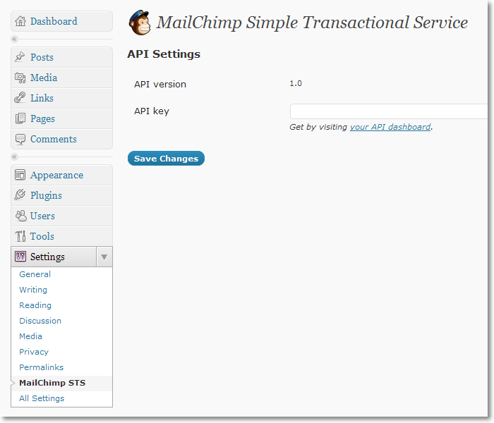
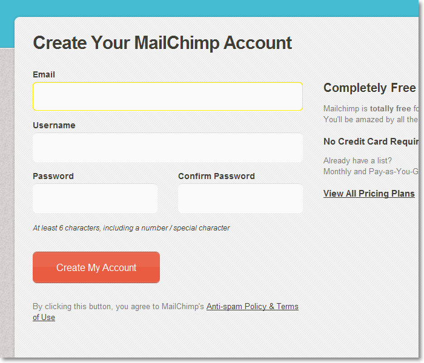
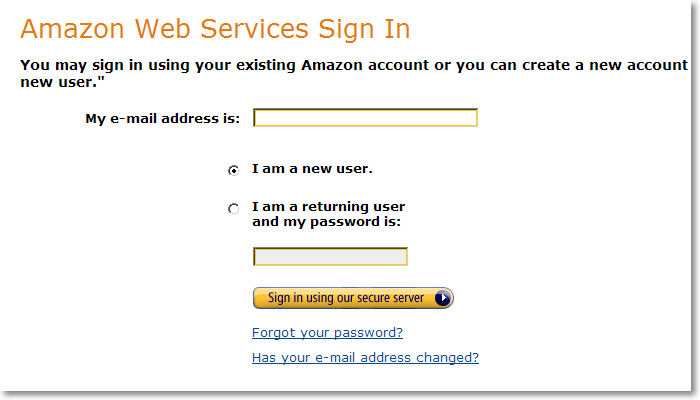
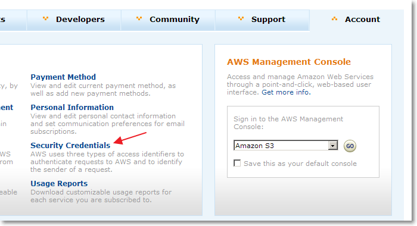
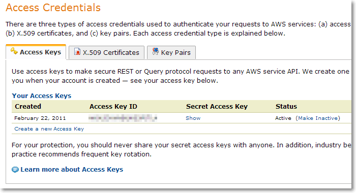
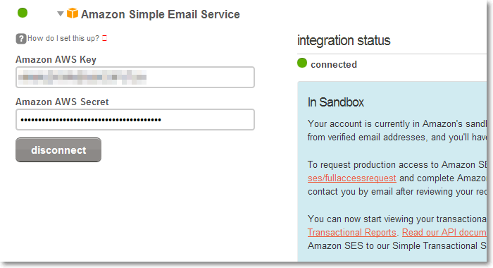

Things you need to do before using the plugin
MailChimp STS page should appear in WordPress Settings.
Plugin will not work without MailChimp API key, which is unique and private to your account.
If you do not have account yet go to MailChimp and sign up.
Once the account is registered:
You will need to have an Amazon account, which MailChimp will use to send emails.
The Amazon service is scalable and will be able to store your email subscriptions and data as the list continues to grow. If your list is small, you can opt for a free plan, but will need to activate the account with a credit card. You can select a plan that charges you only for what you use.
If you do not have account yet go to Amazon and sign up.
You will need phone confirmation to verify who you are.
Log in to Amazon and click on Account then Security Credentials for your secret access key.
There locate and copy Access Key ID and Secret Access Key.
Log in to MailChimp and click on Account, then Integrations. Scroll to Amazon Simple Email Service and fill in your keys.
Fill in and submit the form to request production access.
Without production access your account is put into sandbox mode and is unable to send emails to arbitrary email addresses.